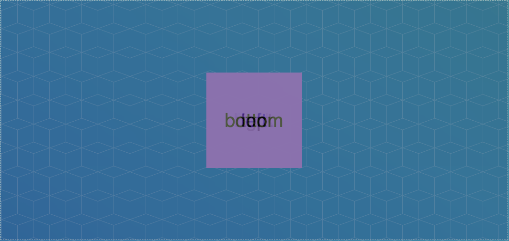
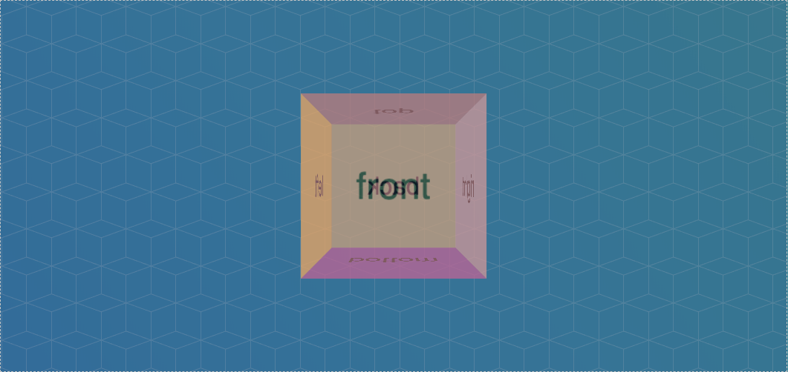
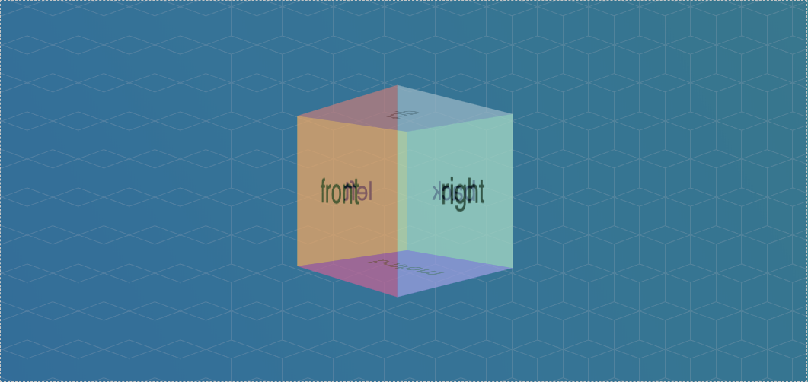
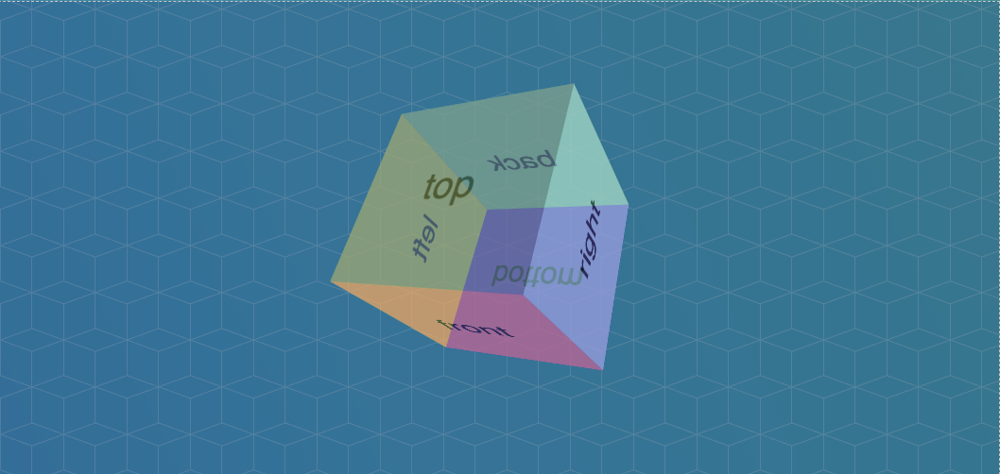

Si vous avez trouvé que les exercices précédents étaient trop simples, attendez de voir celui-ci.
Dans cette exercice, vous allez devoir créer un cube en 3D à partir de 6 divs distinctes, les 6 faces du cubes. Puis, vous animerez le cube pour le faire tourner, dans un premier temps sur un seul axe, puis sur plusieurs.
Pour le moment, les divs des faces dépassent de la zone de travail. C'est normal puisque, comme toutes les divs, elles ont tendance par défaut à vouloir se placer les unes au dessous des autres.
Il va d'abord falloir placer les divs les unes sur les autres, pour cela, il suffit de dire que toutes les faces sont en position:absolute;
Puisque toutes les faces se trouve à l'intérieur d'une div #cube, elles vont toutes automatiquement aller se placer en position (0, 0) dans le cube.
Voici ce que vous devriez obtenir :
Il va maintenant falloir faire tourner et déplacer en 3 dimensions chacune des faces du cube au bon endroit.
Pour cela, vous aller devoir imprimer, systématiquement à chaque face, d'abord une rotation, sur le bon axe et avec le bon angle, selon la face en question et ensuite une translation de 100px. Ceci aura pour effet de positionner correctement chacune des faces dans le cube.
Cela ressemblera donc à transform: rotateY(angle) translateZ(100px);
Essayez de trouver quelle face doit être tourner de combien de degrés et sur quel axe pour reconstituer un cube complet.
N'hésitez pas à cacher toutes vos faces avec display: none; et à les afficher une par une en travaillant leur position une par une.
La face gauche par exemple, doit recevoir le code suivant : transform: rotateY(-90deg) translateZ(100px);
Toutes les faces doivent recevoir une rotation de + ou - 90 degrés, sauf la face front, qui ne reçoit pas de rotation et la face back qui reçoit une rotation de 180 degrés.
Vous devriez obtenir ceci :
Il est temps de créer votre animation en 3D.
Celle-ci doit s'appliquer sur toute la div #cube d'un coup. Vous n'allez pas vous amuser à animer chaque face une par une.
Commencez donc par appliquer une rotation de 360 degrés en 4 secondes à votre cube sur son axe Y. Le cube devrait tourner sur sa base.
Enfin, ajoutez une rotation de 720 degrés, en plus de la précédente sur son axe X. Pour obtenir un effet maximum.
